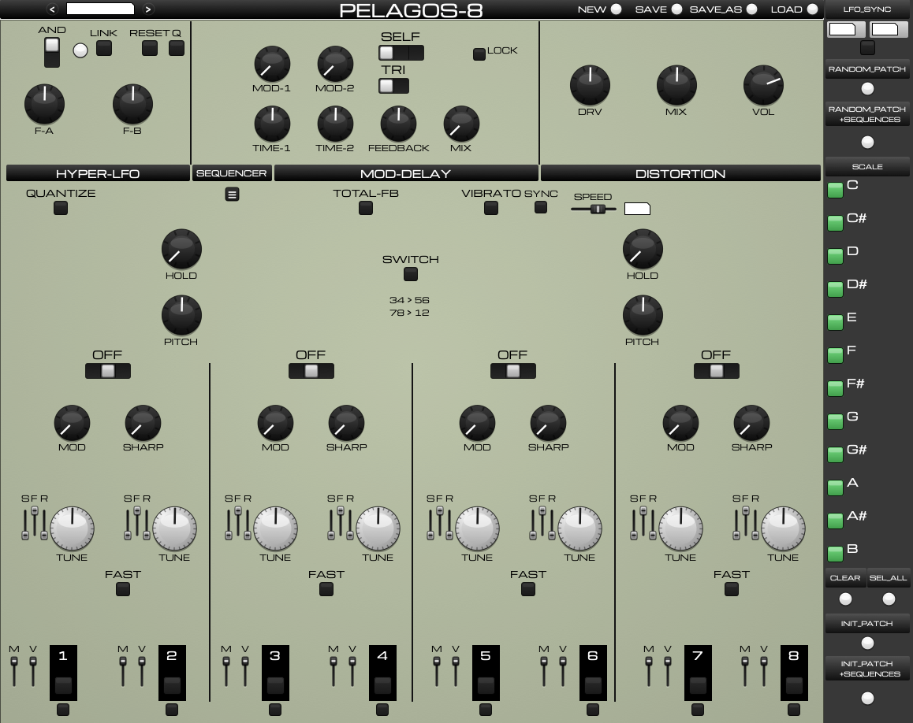
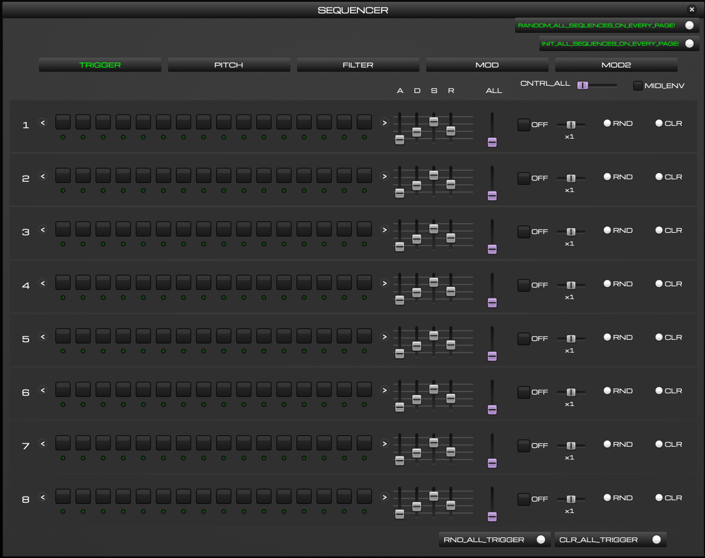
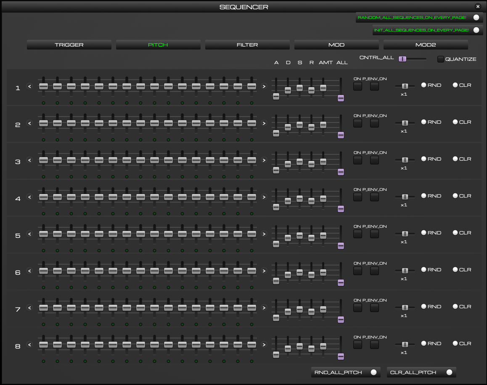
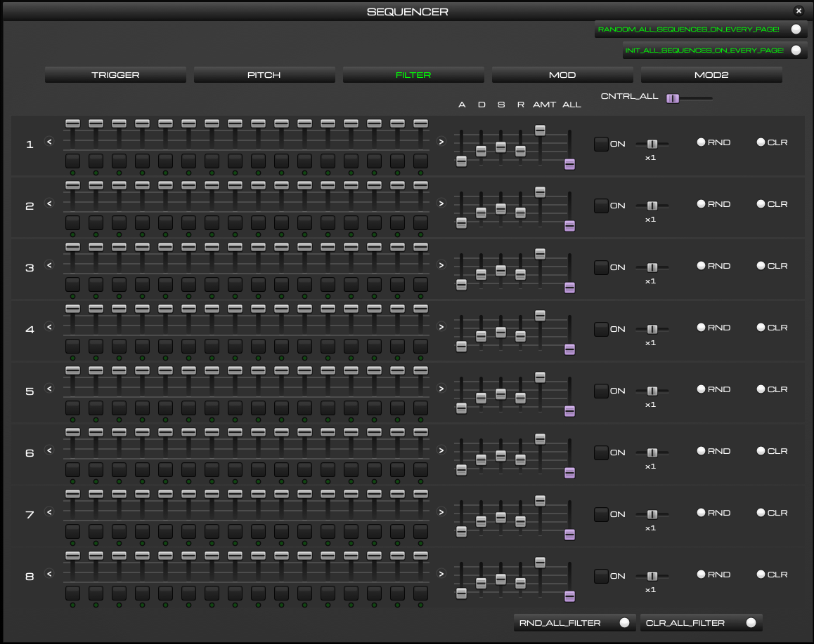
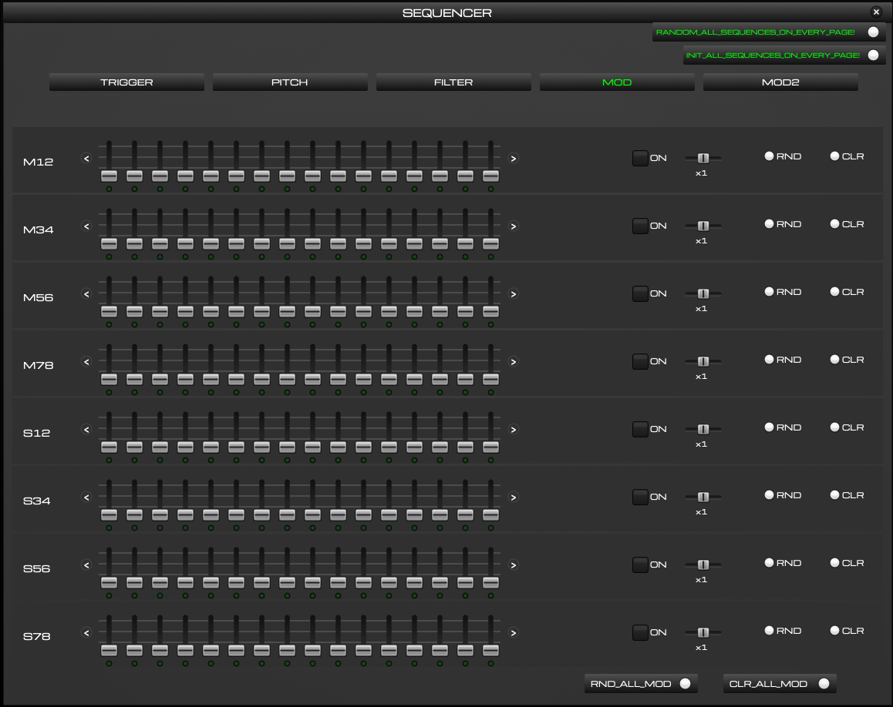
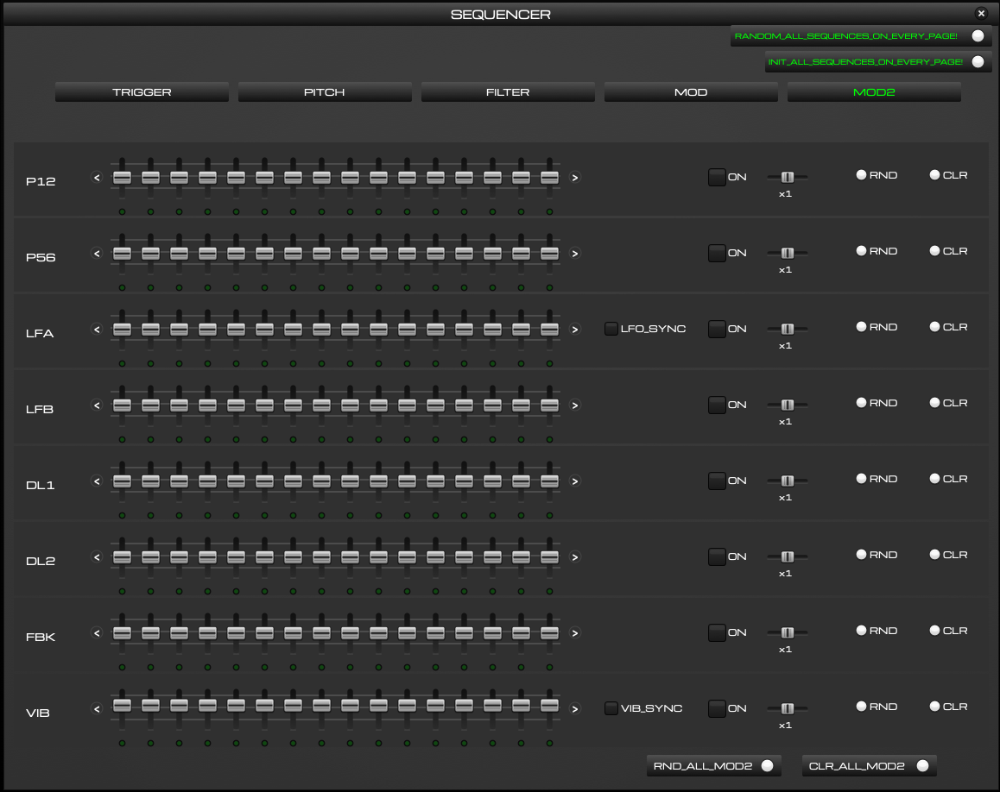

Eight-voice drone and percussion synthesizer plugin with a five-page step sequencer.

VST3 for macOS (Apple Silicon and Intel), Windows (64-bit) and Linux (64-bit). Download from github.com/timhastie/Drone8/releases.
Pelagos-8 is a derivative of LIRA-8 by Mike Moreno DSP and is inspired by the SOMA Laboratory Lyra-8. It is not affiliated with SOMA Laboratory or Mike Moreno DSP.
Everything you need is in one zip file for your system. Download it from the Releases page, unzip it, and double-click the installer. It copies the plugin into the right folder and installs the small preset helper. The whole thing takes a couple of minutes.
https://github.com/timhastie/Drone8/releases
Pick the file for your computer. Do not use the green "Code" button on the main page. That gives you the source files, not a working plugin. Close your DAW before you install.
| Your computer | Download | Installer inside the zip |
|---|---|---|
| Mac (Apple Silicon or Intel) | Pelagos-8-…-macos-….zip | Install Pelagos-8.command |
| Windows 10 / 11 (64-bit) | Pelagos-8-…-windows-x64.zip | Install Pelagos-8.bat |
| Linux (64-bit) | Pelagos-8-…-linux-x64.zip | install-pelagos-8.sh |
The Open Anyway button only stays in System Settings for about an hour after the block. If it is not there, double-click the installer again and go back. On macOS 14 and older you can instead right-click the installer, choose Open and click Open in the dialog. The installer clears the quarantine flag from the plugin, so your DAW shows no second warning. If a DAW ever refuses Pelagos-8.vst3 anyway, open Terminal and run the line below, then restart the DAW.
xattr -dr com.apple.quarantine ~/Library/Audio/Plug-Ins/VST3/Pelagos-8.vst3
If there is no Run anyway button, right-click Install Pelagos-8.bat, choose Properties, tick Unblock at the bottom and click OK, then double-click it again. If Microsoft Defender reports Pelagos-8-helper.exe as a threat, that is a false positive on an unsigned program: open Windows Security, go to Virus & threat protection, open Protection history, choose the entry and click Restore or Allow. Then under Manage settings add a folder exclusion for %APPDATA%\Pelagos-8 and run the installer again. If the installer says it cannot replace the plugin, your DAW is still open. Close it and run the installer again.
bash install-pelagos-8.sh. Linux shows no security prompt.~/.vst3, starts the preset helper and sets it to start with your desktop session. It needs python3 with Tk and tells you the package to install if that is missing (python3-tk on Debian and Ubuntu).If your DAW is installed as a Flatpak or Snap, it runs in a sandbox that cannot see the helper, so the preset buttons do nothing and it may not find ~/.vst3. Use the DAW's normal download instead.
| Plugin | Preset helper | Your presets | |
|---|---|---|---|
| Mac | ~/Library/Audio/Plug-Ins/VST3 | ~/Library/Application Support/Pelagos-8 (starts at login) | Music/Pelagos-8/Presets |
| Windows | C:\Program Files\Common Files\VST3 | %APPDATA%\Pelagos-8 (starts with Windows) | Music\Pelagos-8\Presets |
| Linux | ~/.vst3 | ~/.local/share/pelagos-8 (autostart) | ~/Music/Pelagos-8/Presets |
The preset helper is a tiny program that shows the Save and Load dialogs, because a plugin cannot open file windows by itself. It uses no noticeable CPU. The zip also contains an uninstaller that removes everything except your presets.
Pelagos-8 has eight voices arranged in four pairs. Each voice is a tunable oscillator with its own envelope, filter and output. The pairs can frequency-modulate each other, run through a modulated dual delay and a distortion stage, and the whole instrument can be driven by a step sequencer that follows your DAW's transport.
You can play it three ways, and mix them freely:
Pelagos-8 has eleven stereo outputs: Main, Voice 1 to Voice 8, Voices 1234 and Voices 5678. You only hear Main by default. To process a single voice separately, enable the extra outputs in your DAW's track routing. The small toggle under each pad on the front panel removes that voice from Main so it only appears on its own output.
Pelagos-8 is a heavily extended derivative of LIRA-8 by Mike Moreno DSP (BSD licence), a Pure Data emulation inspired by the SOMA Laboratory Lyra-8. Plugin engine: Camomile by Pierre Guillot (GPLv3) and Pure Data by Miller Puckette and contributors (BSD). UI typeface: Michroma (SIL Open Font License). Pelagos-8 is not affiliated with SOMA Laboratory or Mike Moreno DSP. Source and licence texts: github.com/timhastie/Drone8.
| < name > | Shows the current preset. The arrows step to the previous or next preset in your preset folder. |
| NEW | Starts a fresh, unnamed preset at the default settings. |
| SAVE / SAVE_AS | Saves the current sound, including all sequences, to the current preset file or to a new file. |
| LOAD | Opens a file dialog to load a preset. |
The eight voices sit in four pairs: 1-2, 3-4, 5-6 and 7-8. Some controls belong to one voice, some to a pair and some to a group of four.
| Pad 1 to 8 | Holds the voice while lit. Click to hold, click again to release. The sequencer and MIDI light the same pads. |
| TUNE | The pitch of the voice. The sequencer's PITCH page and MIDI notes override it while they play. |
| S F R | Three small sliders per voice. S trims the voice's sharpness, F is the voice filter cutoff and R its resonance. |
| M V | Per-voice Modulation depth and Volume. |
| Toggle under the pad | Isolates the voice: it leaves the Main output and plays only on its own output. |
| MOD (pair) | How much the pair is frequency-modulated. At zero the pair is clean. |
| SHARP (pair) | Waveform sharpness for the pair, from soft to harsh. It also acts as a master for the two S trims. |
| Rocker above the pair | Chooses the pair's modulation source. OFF in the centre, with the neighbouring pair or the HYPER-LFO on either side. |
| FAST | Makes the pair's attack and release fast and percussive instead of slow and droning. |
| HOLD (1234 / 5678) | How long the group's voices keep sounding after a pad is released. |
| PITCH (1234 / 5678) | Shifts the pitch of all four voices in the group. |
| SWITCH | Rewires the cross-modulation between pairs (34 feeds 56, 78 feeds 12). |
| TOTAL-FB | Feeds the whole mix back into the voices. Wild, use with care. |
| VIBRATO / SYNC / SPEED | Adds vibrato to all voices. SYNC locks the vibrato speed to your DAW tempo and the box shows the division. |
| QUANTIZE | Snaps voice tuning to the notes enabled in the SCALE sidebar. |
| F-A / F-B | Rates of the two LFOs. They are combined into one modulation signal. |
| AND / OR | How the two LFOs are combined. The rocker label shows the current mode. |
| LINK | Links the two LFO rates so one knob moves both. |
| RESET | Restarts the LFOs from the beginning of their cycle. |
| Q | Quantized LFO: steps the LFO rates in musical ratios instead of sweeping them freely. |
| LFO_SYNC (sidebar) | Locks the LFO rates to your DAW tempo. The two boxes show the divisions for A and B. |
| TIME-1 / TIME-2 | Delay time of the two delay lines. |
| MOD-1 / MOD-2 | How much each delay time is modulated. |
| FEEDBACK / MIX | Delay regeneration and dry/wet balance. |
| Upper rocker (SELF / LFO) | Source of the delay modulation: the delay's own output, off, or the HYPER-LFO. |
| Lower rocker (TRI) | Waveform used for the delay modulation. |
| LOCK | Keeps the MOD-DELAY settings as they are when you press RANDOM_PATCH. |
| DRV / MIX | Drive amount and dry/wet balance of the distortion. |
| VOL | Master output volume. |
| RANDOM_PATCH | Randomizes the front panel. Add +SEQUENCES to randomize the sequencer too. |
| SCALE C to B | The notes that QUANTIZE is allowed to use. CLEAR turns them all off, SEL_ALL turns them all on. |
| INIT_PATCH | Resets the front panel to the default sound. +SEQUENCES also clears every sequencer page. |
Press the SEQUENCER button on the front panel to open it. The sequencer runs whenever your DAW transport is playing and stops when it stops. Close the window with the × in the top right. The sound keeps running either way.
Five pages share the same layout: eight lanes with sixteen steps, and the same lane controls on the right. Learn them once on the TRIGGER page and the rest follows.
| Steps 1 to 16 | The pads or sliders in the lane. The small dot under each step lights as the playhead passes. |
| < > | Rotates the lane one step left or right. Step 16 wraps round to step 1. |
| ON / OFF | Enables the lane. A lane that is off keeps its data but does nothing. |
| x1 slider | Clock multiplier for the lane, from 1/8 of the base speed to 8 times it. Different lanes at different speeds give long evolving patterns. |
| RND / CLR | Randomizes or clears that lane. |
| RND_ALL / CLR_ALL | Same, for every lane on the page. |
| RANDOM_ALL_SEQUENCES_ON_EVERY_PAGE | Randomizes all five pages at once. INIT_ALL_SEQUENCES_ON_EVERY_PAGE clears all five. |
| A D S R | Envelope attack, decay, sustain and release for the lane, where the page has an envelope. |
| ALL (purple slider) | A one-slider morph for the lane's envelope: low is a short percussive ping, high is a long drone. CNTRL_ALL at the top moves the ALL slider of every lane together. |

Lanes 1 to 8 are voices 1 to 8. Each lit pad fires that voice's envelope on that step. Shape the envelope with A D S R or just pull the purple ALL slider. MIDI_ENV makes incoming MIDI notes use these envelopes as well, so a keyboard plays the same shapes as the sequencer.

Each slider sets the pitch of that voice on that step. Switch the lane ON to let it take over from the TUNE dial. With QUANTIZE on, the sliders snap to the notes chosen in the SCALE sidebar, so random patterns stay in key.
P_ENV_ON adds a pitch envelope to every trigger of that voice. A D S R shape it and AMT sets how far it sweeps, up to several octaves for drum-style zaps.

The slider above each step sets the voice's filter cutoff on that step. The pad below it fires the filter envelope on that step. A D S R shape the envelope, AMT sets how far it opens the filter. Clearing a lane sets the cutoff fully open.

Sequences the pair knobs of the front panel. M12 to M78 move the four MOD knobs and S12 to S78 the four SHARP knobs, one value per step.

Sequences the global controls:
| P12 / P56 | The PITCH knobs of groups 1234 and 5678. |
| LFA / LFB | HYPER-LFO rates A and B. With LFO_SYNC on, the steps become tempo divisions from x16 down to 1/32. |
| DL1 / DL2 | The two delay times. |
| FBK | Delay feedback. |
| VIB | Vibrato speed. With VIB_SYNC on, the steps become tempo divisions. |
A preset stores the whole front panel and all five sequencer pages. Preset files have the extension .lira and are plain text, so you can copy them between Mac and Windows or share them.
| Where they live | In a Pelagos-8/Presets folder inside your Music folder. The installer creates it. |
| SAVE_AS | Asks for a name and writes a new file. |
| SAVE | Overwrites the preset shown in the top bar. If none is shown it behaves like SAVE_AS. |
| LOAD | Picks a file. The < > arrows then walk through the folder in name order. |
| Channels 1 to 8 | Play voices 1 to 8. The note sets the voice pitch and the voice holds while the key is down. With QUANTIZE on, notes snap to the scale. |
| Channel 9 | Classic mode: C1 to G1 hold pads 1 to 8 regardless of the note's pitch. |
| MIDI_ENV | On the TRIGGER page. When on, MIDI notes play through that voice's sequencer envelope. |
| Automation | Every front-panel control is a plugin parameter and can be automated or mapped from your DAW. |
In Ableton Live, set the clip or track's MIDI channel in the track's I/O section to pick the voice.
| The DAW does not list the plugin | Run the installer again and read its last lines. Quit the DAW fully, reopen it and rescan plugins. On a Mac the installer must be allowed in System Settings first, see section 1. |
| No sound | The track must be armed or monitoring, and the plugin's VOL knob up. Hold a pad to test without MIDI. |
| Preset buttons do nothing | The preset helper is not running. Run the installer from the download again (it restarts the helper), then try SAVE_AS. On Windows check that Defender has not quarantined Pelagos-8-helper.exe. |
| Sequencer does not move | It follows the DAW transport. Press play in the DAW. Also check the lane is ON. |
| Everything sounds chaotic | Press INIT_PATCH +SEQUENCES and start again. Turn TOTAL-FB off and lower FEEDBACK. |